Demo
This site shows the different states during a game of Triplet and the knowledge of the agents.
Our implementation can be found
here.
Eventhough the players are called P, Q and R, the program is making graphs calling them a, b and c at the edges of the lines. Please read a, b, c as P, Q, R.
Initialization
We are playing a game of Triplets. The players are called P, Q and R. The first set consists of cards 1, 2 and 3 and the second set of cards 4, 5 and 6.
The cards are distributed in the following manner: Player P receives card 3 and 5, Player Q card 1 and 6 and Player R receives card 2 and 4.
In the initial state of the game, the players only know their own cards and nothing about the cards of the other players.
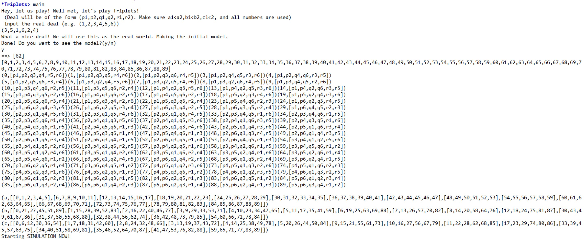
First Question
Player P starts by asking the first question. Player P asks player R for the card 1.
This question updates the knowledge of player Q and R in such a way that they now know that player P has to have a card of the first set, as the rules state that you are only allowed to ask for a card from a set from which you already possess one card. They also know that player P does not hold card 1, as players do not ask for cards they already have. Player Q does not know whether player P holds card 2 or 3. Player R does know that player P has card 3 as he holds card 2 and card 1 is the only card left.
Player Q answers that he does not have card 1. This knowledge is updated for all players, as this is a public announcement.
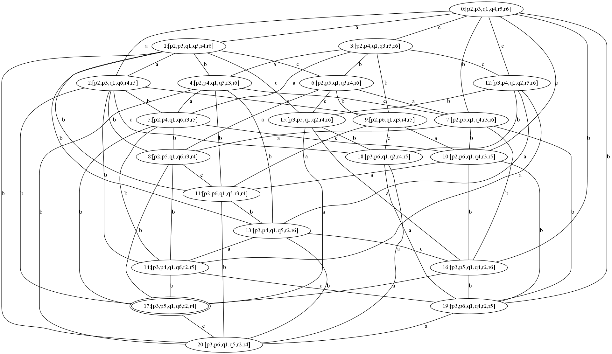
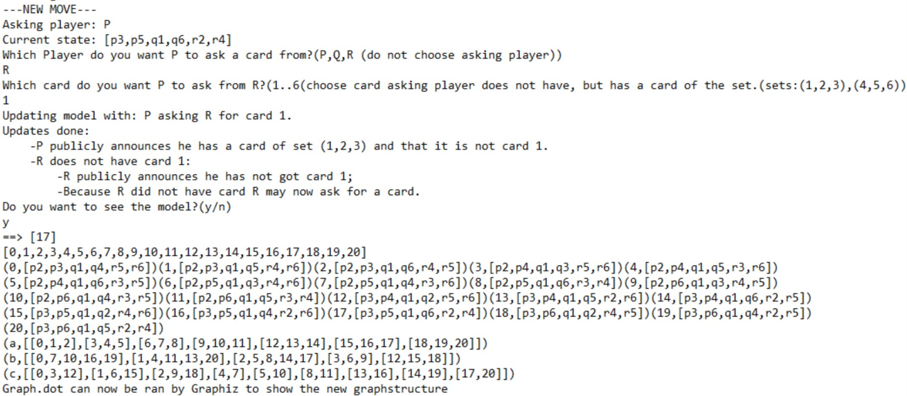
Second Question
Player P did not receive a card, thus player Q now askes for a card. Player Q is not sure about any card the other players have. He thus makes a guess and askes player R for card 4.
The knowledge of the other players is again updated with the knowledge that player P holds a card of the second set and he does not hold card 4.
Player R holds card 4 and thus gives the card to player Q. This changes the real world as the card distribution changes to [P3, P5, Q1, Q4, Q6, R2]. Player Q does not announce that he has a set, thus player P and R know that he does not have all cards from the second set.
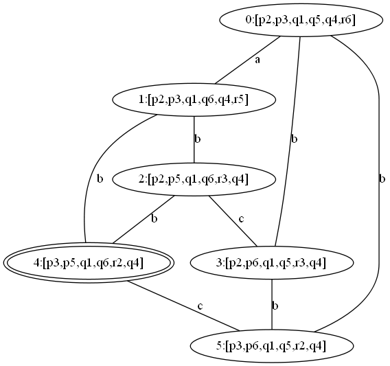
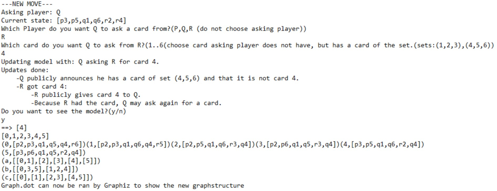
Third Question
Player Q got a card after the last question and can thus ask another question. Player Q tries to get all cards from the second set and asks player R for card 5.
This updates the knowledge of player R, in the way that he knows that player Q does not hold card 5. Player P already knew that player Q does not hold card 5, as he has the card himself.
Player R responds that he does not have card 5.
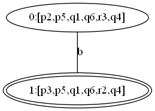
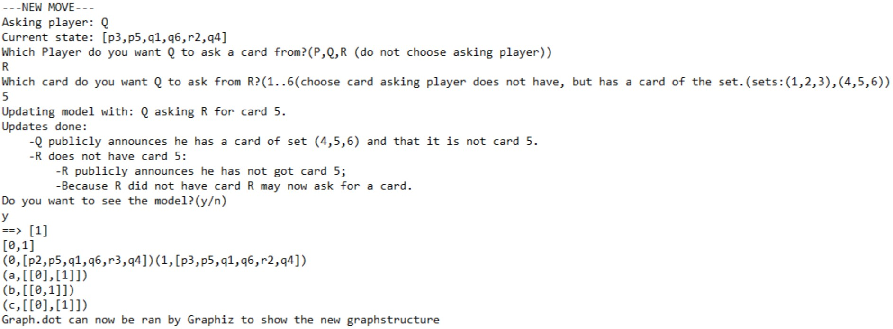
Fourth Question
Now it is the turn of player R. Player R only has a card of the first set thus has to ask for a card from that set. He knows that player P has card 3 thus he asks player P for that card.
Player P gives the card to player R. This changes the real world and the knowledge of all agents.
Now all players know what the real world is as only player Q did not know whether player P had card 2 or 3 and whether Q had card 2 or 3.
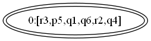
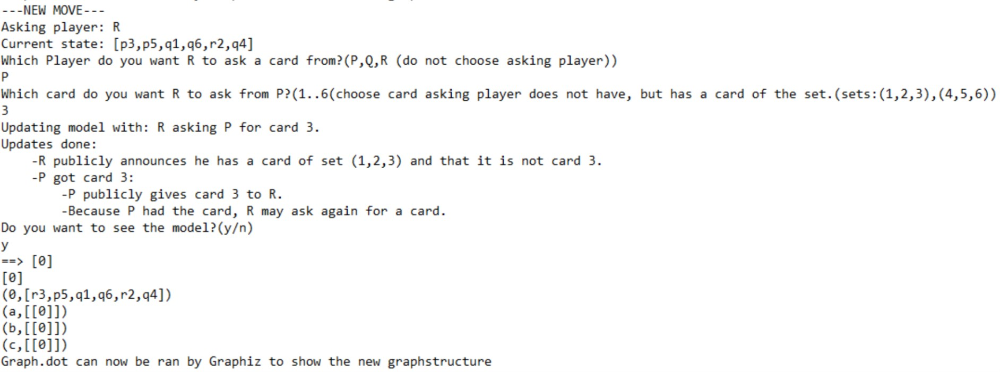
Fifth Question
Player R has another turn. He does not know who has card 1, and takes a guess and asks player Q for card 1.
Player Q gives card 1 to player R.
This changes the real world. Player R now announces that he has a set.
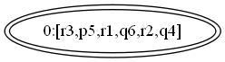
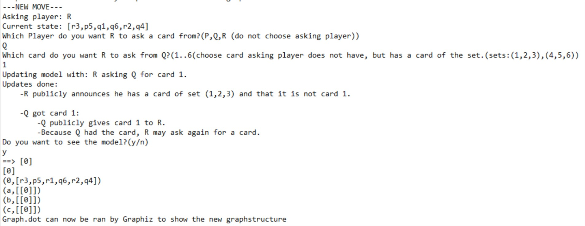
Sixth Question
Player R has no cards left, thus it is the turn of player P. Player P knows that player Q has to have all cards from the second set that he does not hold as player R does not have any cards left.
Player P now asks for card 4 from player Q, which he then receives. After this, he asks for card 6 from player Q which he also receives. Player P now announces that he has a set.
The Game Ends
Player P and R both have one set and thus win the game. Player Q loses.